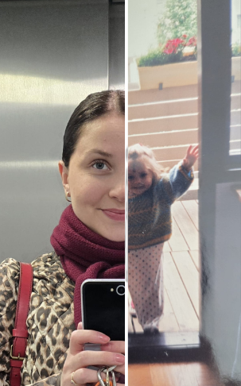

Linda Oksanen
Käyttäjäsuunnittelu | Design | Asiakaspalvelu |
Empatia | Haaveilija | Luova | Neulonta
Linda Oksanen
Käyttäjäsuunnittelu | Design | Asiakaspalvelu |
Empatia | Haaveilija | Luova | Neulonta
Olen digitaalisen sisällön ja asiakaspalvelun ammattilainen, joka opiskelee parhaillaan työpsykologiaa ja tietojenkäsittelyä rakentaakseen entistä inhimillisempiä ja toimivampia verkkopalveluita.

Yhteiskuntatieteet | Sosiaalipsykologia
Alko
Nanso
RPT Byggfakta Oy/ Academic Work
Teollisuus-ja brändimuotoilu
Alko
Osa-aikaisuus opiskeluiden ohessa
Minulla on tausta asiakaspalvelussa, digitaalisessa sisällössä ja verkkopalveluiden kehittämisessä. Olen työskennellyt junior web editorina sekä asiakaspalvelun ja verkkokaupan parissa, ja opiskelen parhaillani sosiaalipsykologiaa, pääaineena työpsykologia ja tietojenkäsittely.
Kiinnostukseni kohdistuu siihen, miten digitaaliset palvelut rakentuvat käyttäjän näkökulmasta – selkeästi, toimivasti ja inhimillisesti.
Asiakaspalvelu on ollut tärkeä osa ammatillista kasvua: se on opettanut minulle, miten käyttäjät kokevat palvelut arjessa ja milloin jokin ei toimi niin kuin pitäisi. Työskentely verkkokaupan ja vähittäismyynnin asiakaspalvelussa on kehittänyt kykyäni kuunnella, priorisoida ja ratkaista ongelmia käyttäjälähtöisesti.
Junior web editorina olen osallistunut verkkosivujen sisällön, rakenteen ja asiakaskokemuksen kehittämiseen. Työhöni on kuulunut sisällöntuotantoa, B2B-asiakaspalvelua, uutiskirjeitä sekä sosiaalisen median ja intran sisällöllistä suunnittelua, mikä on vahvistanut ymmärrystäni digipalveluiden kokonaisuudesta.
Opintoni sosiaalipsykologiassa tukevat ymmärrystäni ihmisten, työn ja teknologian välisestä vuorovaikutuksesta. Etsin roolia, jossa voin hyödyntää viestintä-, organisointi- ja digitaalista osaamistani ja kehittyä edelleen monipuolisissa työtehtävissä.
Minulla on tausta asiakaspalvelussa, digitaalisessa sisällössä ja verkkopalveluiden kehittämisessä. Olen työskennellyt junior web editorina sekä asiakaspalvelun ja verkkokaupan parissa, ja opiskelen parhaillani sosiaalipsykologiaa, pääaineena työpsykologia ja tietojenkäsittely.
Tehdään yhdessä töitä.